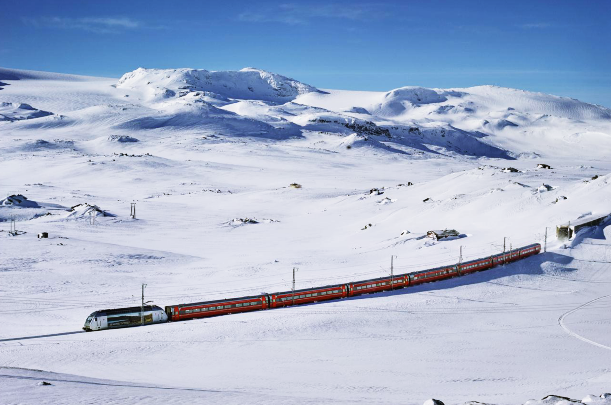
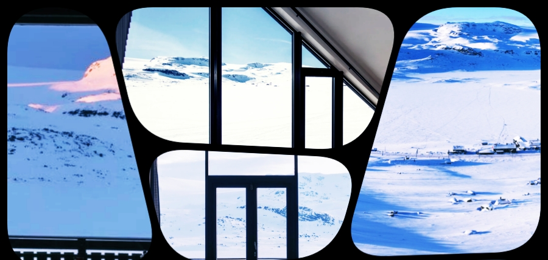
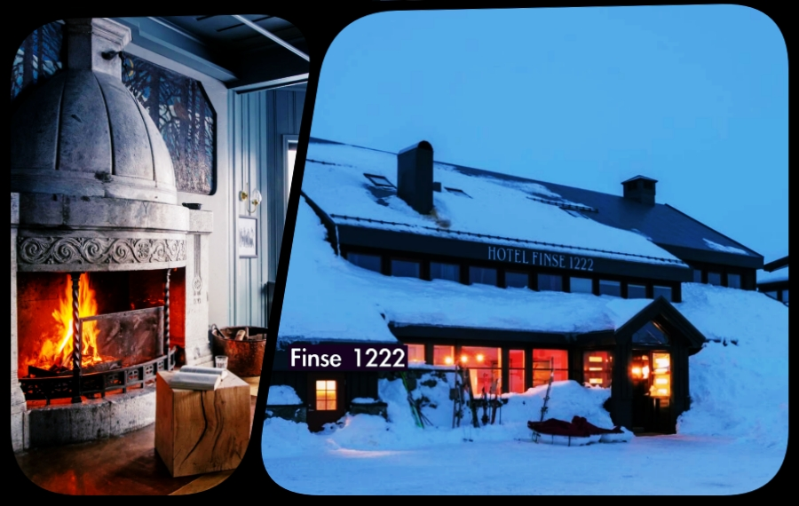
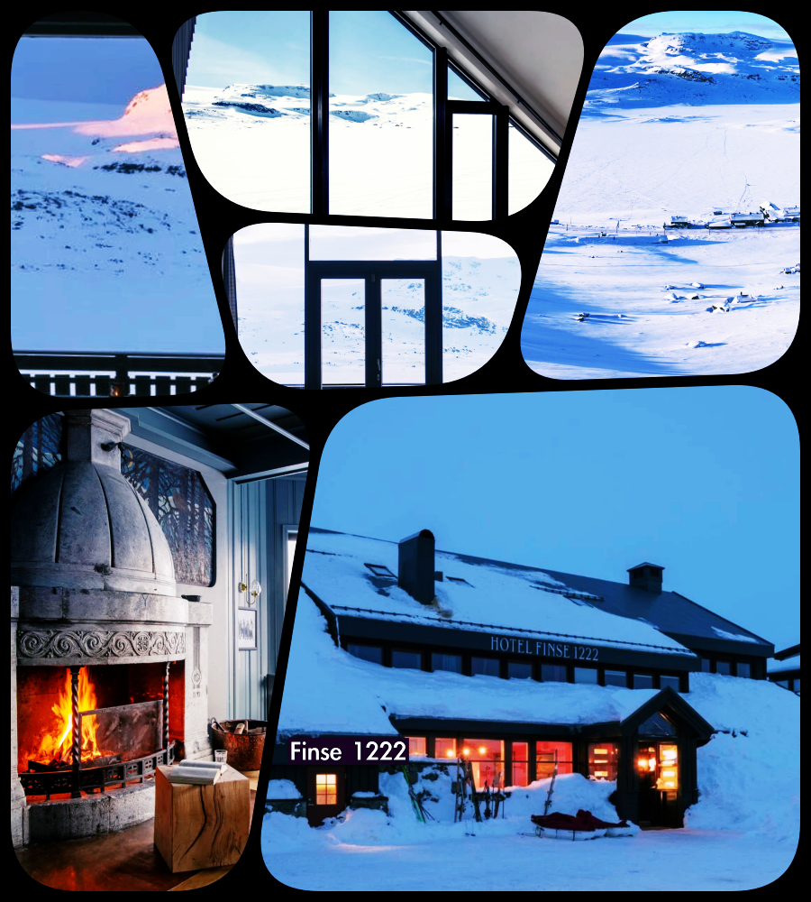

scroll
영화 《스타워즈: 제국의 역습》(The Empire Strikes Back, 1980)의 촬영지, 노르웨이 핀세(Finse)와 하르당에르요쿨렌 빙하입니다.

1979년 제작진은 반세기 만의 폭설과 강풍, 눈사태로 촬영이 여러 차례 중단될 만큼 극한의 환경을 겪었습니다. 제작진은 그 혹독한 자연을 정복하지 않았습니다. 오히려 그 통제 불능의 현실이 '호스(Hoth)'라는 얼음 행성의 완벽한 현실감을 만들어 주었습니다.


핀세의 옛 이름은 '황야의 호수(Lake of the Wilderness)'입니다.

스타워즈: 제국의 역습이 특별한 이유. 많은 사람들이 스타워즈를 SF 영화라고 생각하지만, 사실 《제국의 역습(The Empire Strikes Back)》은 성장 영화입니다. 그리고 스타워즈 시리즈 가운데 가장 어둡고 철학적인 작품으로 평가받습니다. 영화는 '승리'로 시작하지 않고 오히려 패배로 시작합니다.
반란군은 얼음 행성 호스(Hoth)에 숨어 있지만, 제국군에게 발견됩니다. 거대한 AT-AT 보행병기가 진격하고, 반란군은 처참하게 무너집니다. 영웅들은 승리하지 못하고 도망칩니다. 주인공 루크도 실패합니다.
루크는 이전의 승리(데스스타 파괴 등)를 통해 자신이 이미 영웅이라고 믿었으나, 호스의 극한 환경과 패배는 그가 얼마나 작은 존재인지를 깨닫게 합니다. 루크는 자신이 준비되었다고 생각했습니다. 하지만 요다는 아직 아니다라고 말합니다.
루크는 참지 못하고 친구들을 구하기 위해 떠납니다. 그리고 팔도 잃고, 결국 다스 베이더에게 완전히 패배합니다. 세상이 믿었던 것과 다르다는 사실까지 알게 됩니다. 영화 마지막은 승리가 아니라 상실입니다.
그럼에도 불구하고 이 작품이 최고의 작품으로 평가받는 이유는 바로 실패를 통해 성장하기 때문입니다. 영웅이 강해서 영웅이 되는 것이 아니라, 무너지고, 착각이 깨지고, 자기 한계를 인정하면서 조금씩 성숙해진다는 사실을 보여줍니다.
핀세는 아름다운 설원이 아니라 사람을 압도하는 공간입니다. 나무가 거의 없습니다. 눈밖에 없습니다. 그 배경에서 사람은 점처럼 보입니다.
1979년 촬영 당시에는 반세기 만의 폭설과 강풍, 눈사태로 촬영이 여러 차례 중단됐고, 제작진은 호텔 주변의 눈더미를 활용해 장면을 찍을 정도였습니다. 극한 환경이 오히려 영화의 사실감을 만들었습니다.
제국의 역습을 보면 인간이 얼마나 작은 존재인지를 알 수 있습니다. 핀세의 환경은 사람을 거대한 흰 공간에 점처럼 보이게 합니다. 말보다 풍경이 압도합니다. 이게 핀세입니다. 그래서 핀세는 사람이 아니면서도 주인공이 됩니다. 핀세는 사람을 돋보이게 하는 장소가 아니라, 사람이 얼마나 작은 존재인지를 깨닫게 하는 장소입니다.
황야의 호수(Lake of the Wilderness)
핀세의 옛 이름은 황야의 호수입니다. 황야는 사람을 강하게 만드는 곳이 아니라, 사람의 크기를 다시 알게 하는 곳 같습니다. 영화는 하나의 문화적 단서일 뿐이고, 핀세의 진짜 의미는 극한의 자연이 인간을 얼마나 작게 만들고, 그 작아짐 속에서 비로소 새로운 시선이 태어날 수 있는 공간이라는 데 있습니다.
그 영화의 첫 번째 한계 경험이 핀세(Hoth)에서 시작됩니다. 그런데 핀세는 루크가 완성되는 장소가 아니라, '자신이 아직 준비되지 않았음을 알게 되는 장소'입니다.
영화 초반을 보면, 루크는 호스(Hoth)의 눈밭에서 순찰하다가 괴수(왐파)에게 습격당합니다. 간신히 살아남지만, 곧바로 반란군 기지는 제국군에게 발각됩니다. 그들은 싸워 이기지 못하고 도망칩니다. 여기서 이미 첫 번째 착각이 깨집니다. "우리는 이길 수 있다."가 아니었습니다.
그리고 영화는 계속 루크를 무너뜨립니다. 그는 요다를 만나 훈련을 받지만, 속으로는 이미 "이 정도면 충분히 강해졌어."라고 생각합니다. 하지만 요다는 계속 말합니다. 아직 아니다.라고.
그래서 루크는 친구들을 구해야 한다는 마음이 앞섰기 때문에 떠납니다. 결국 다스 베이더에게 완전히 패배하고, 영화 마지막에는 자신의 오른손까지 잃습니다. 그리고 가장 충격적인 진실을 듣게 되죠. "I am your father." 이 장면 때문에 《제국의 역습》은 영화사에 남게 되었습니다.
스타워즈는 핀세를 이해하는 열쇠로, 진짜 주인공은 핀세이고, 더 정확히는 황야입니다. 황야에서는 누구나 조금 작아집니다. 그리고 이상하게도, 사람은 자신이 작아질 때 비로소 더 넓은 시야를 갖게 됩니다. 바로 이 점은 이 영화가 이야기하려는 것을 정확히 뒷받침합니다.
그래서 《제국의 역습》은 영웅이 승리하는 이야기가 아니라, 영웅이 자신의 한계를 처음 마주하는 이야기입니다.
끝없는 설원과 침묵의 공간이 필요했던 이유도 여기에 있습니다. 《피아노》는 침묵 속에서 자기 목소리를 찾는 이야기였습니다. 《제국의 역습》은 패배를 통해 자기 한계를 인정하는 이야기입니다. 둘 다 자아가 깨지는 순간을 다루고 있습니다. 그러므로 핀세는 영웅이 탄생하는 장소가 아니라, 영웅의 자신감이 처음 깨지는 황야입니다.
황야는 사람을 칭찬하지 않습니다. 황야는 "네가 생각하는 너는 아직 아니다."를 보여줍니다.
핀세는 영웅을 만들어 주는 곳이 아니라, 아직 영웅이 아니라는 사실을 알려 주는 곳입니다.
영화 속 이야기 스타워즈와 핀세를 연결해보면, 핀세는 단순한 촬영지가 아니라, '착각이 무너지는 공간'인 셈입니다. 루크는 이 얼음 행성에서 처음으로 자신의 한계를 마주합니다. 그 얼음 행성에서 루크는 승리의 영웅이 아니라, 아직 완성되지 않은 자신을 발견하는 순간이었습니다. 핀세는 외부의 황야입니다. 황야의 호수는 내부의 황야입니다.
베델스 비치를 배경으로 하는 《피아노》는 침묵 속에서 자기 목소리를 찾는 이야기입니다. 에이다는 비록 피아노를 잃지만 그 덕분에 자기를 찾았습니다.
루크는 이미 영웅으로 사람들의 박수를 받던 존재였으나, 2편을 통해 그 영웅을 철저히 부숴집니다. 이는 더 큰 사람이 되기 위해서는 먼저 '자기가 이미 큰 사람이라는 착각'이 깨져야 한다는 것을 알려주기 위함입니다.
바로 이 부분이 NUN의 길과 연동됩니다. 에이다도, 루크도 모두 자기가 생각한 이미지를 잃습니다.

그것은 상실을 통해 자신이 얼마나 작은 존재인지 깨닫게 됩니다. 잃었기 때문에 가장 소중한 것을 알게 되고 찾게 됩니다.
이 점에서 상실을 통한 배움의 길 아인과 자아의 정체성을 내려놓는 것은 NUN의 경로가 연결되어 서로 영향을 주고 받음을 알 수 있습니다.
그러므로 '에츠 하하임 티울'은 "깨달음의 기록"이 아니라, 착각이 하나씩 벗겨지면서 시선이 바뀌는 것에 관한 기록이라고 말하고 싶습니다.

핀세역의 번호는 1222였습니다. 그 숫자를 오래 들여다보다가, 어느 순간 106이라는 숫자가 떠올랐습니다. 눈(נון)의 완전한 철자, 50과 6과 50이 합쳐진 그 숫자였습니다. 실수로 내린 역이 아니라, 이미 예고되어 있던 부름이었다는 걸 그때는 몰랐습니다.
저는 잘못내린 핀세 덕분에 제 안에 차가운 행성을 보았고, 어느 정도 성장했다고 한 저의 착각을 벗을 수 있게 되었습니다.
황야의 호수를 연결하는 아인의 시선을 통해, 내면에 초라한 저를 보았습니다. 그리고 그 시선을 인정했을 때, 깨어날 때를 위해 준비한 물이라는 황야의 호수를 경험할 수 있었습니다.